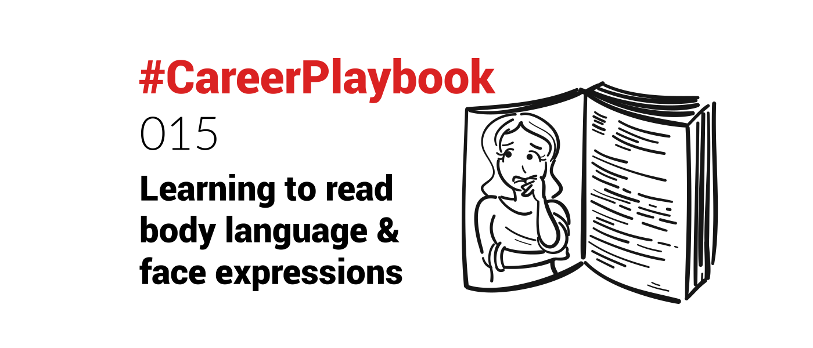

The other day, I was talking with someone, explaining an idea. She crossed her arms, and frowned. I interrupted myself mid-sentence and said..
"too complex?", with a smile.
"Yes" she said, smiling back, and uncrossing her arms.
And we brought back the discussion to a common level of understanding.
I was observing her body language and face expression while talking. And did not even wait for my sentence to end, to change gears accordingly.
I was very bad at that early in my career. Challenging for an introvert geek 🤓
Then I read that nonverbal communication - how humans communicate beyond words, with body language and facial expressions - represents two thirds of all communications.
So if you are just listening to the words, you get only 1/3 of the message.
And the tip of the iceberg might conceal its real form beneath - meaning what people say sometimes does not reflect what they actually think. Shocking, I know! 😁
I discovered the book "What Every BODY is Saying: An Ex-FBI Agent's Guide to Speed-Reading People" by Joe Navarro & Marvin Karlins in 2011 and plunged for a while into the science and tactics to improve oneself at "reading others".
What Every BODY is SayingBe it this book, or another, I think everyone can benefit from getting better at “reading” people. Nicolas DevilleNicolas Deville
Nicolas DevilleNicolas Deville I learned to observe and read people's body language and face expressions, and adapt accordingly.
I learned to observe and read people's body language and face expressions, and adapt accordingly.
I'm not a natural at it, so I still need to learn and actively focus on it - perhaps that is why I feel strained when socialising for too long (and am not a big socialiser).
But I have been told that I can "read a room well".
My approach is to constantly observe the other - even while I talk - and bluntly make the observation about my perceived feeling of their mindset. The goal being to let the other reclaim the course of the discussion. I learned this is called "labeling" 🤷🏻♂️.
"I can see I lost you"
is a phrase I use regularly, with a smile.
The answer can be "Yes, because..." or "No, no... but I was just thinking that....".
It is also obviously a critical skill in Sales, and to negotiate in general.
Someone's nonverbal cues when proposing a solution, presenting an idea or putting forward a price, will tell a lot and help make a better assessment. Which informs your decision for the next step.
That is why - for large deals - it has to be done in person where possible. Video-conference being the next best thing.
It is part of learning the art of negotiation:
#CareerPlaybook 012: Learning The Art of Negotiation is helpful for everyoneA lot of good things in life come after negotiation - learning the basics of negotiation can benefit anyone.Nicolas DevilleNicolas Deville Are you a natural at reading others' body language, or did you learn? What resource has been the most useful to your learning?
Are you a natural at reading others' body language, or did you learn? What resource has been the most useful to your learning?